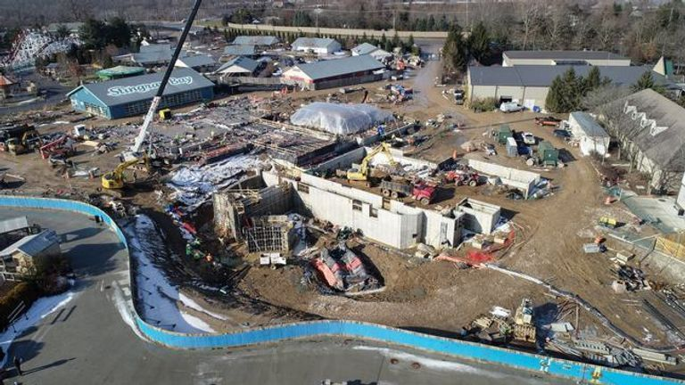
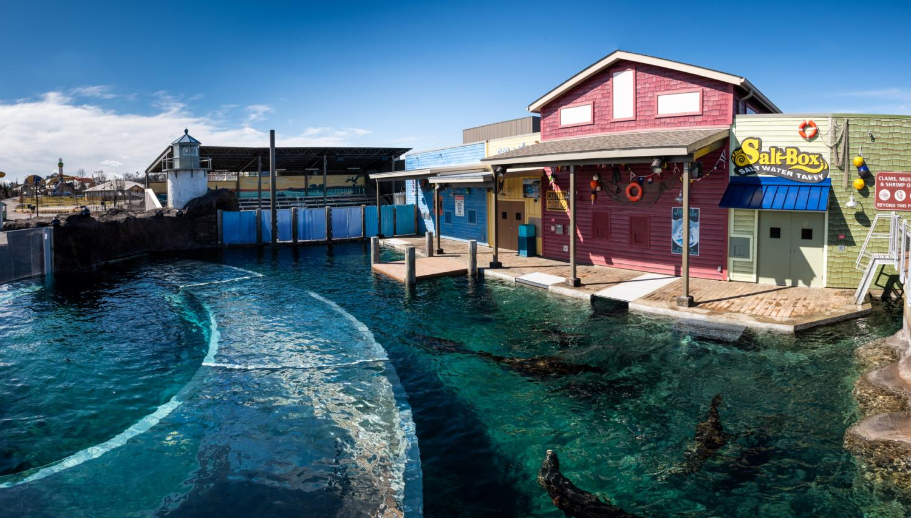
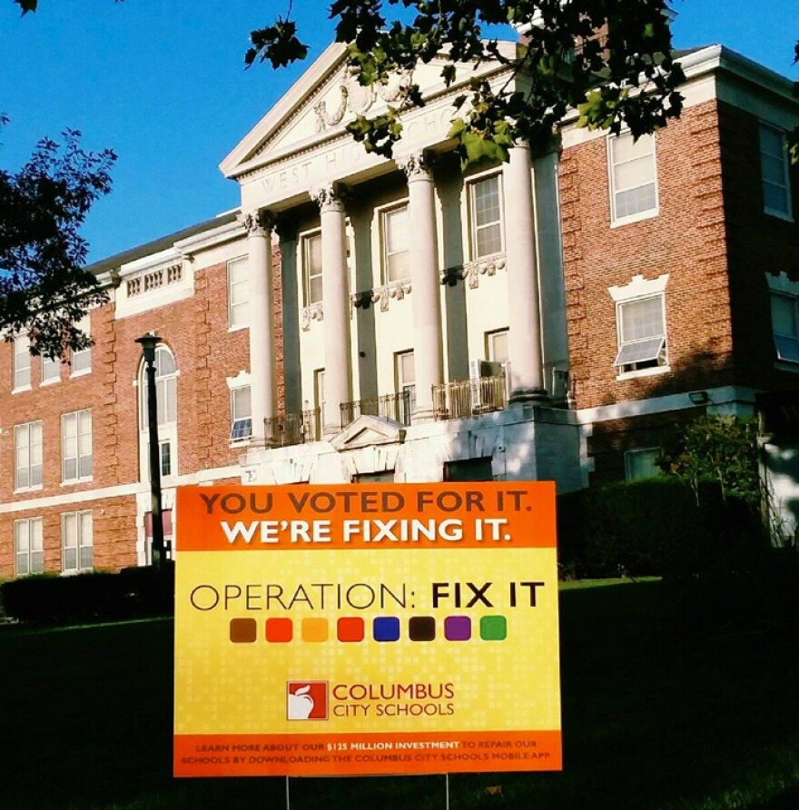

Project Highlights
Associated with UA Local 189, Plumbers & Pipefitters


-
Oversaw the installation of comprehensive plumbing systems for the
exhibit, including underground drains, water lines, hot water tanks,
natural gas lines, and vents
-
Coordinated with multiple teams to ensure the successful completion of
the project from start to finish
-
Ensured all systems were installed to meet safety and efficiency
standards
Associated with UA Local 189, Plumbers & Pipefitters

-
Installed rooftop air conditioning units and serviced natural gas
connections at Eakin Elementary and Scottwood Elementary
-
Ensured proper installation, system functionality, and safety
compliance for all units